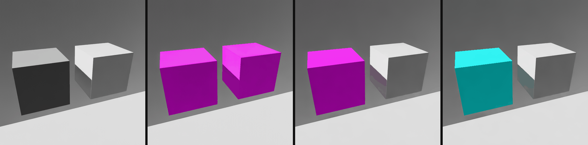

FET006 Materials#
The visual material features: bound-material pixel coverage with a requested render context. Display color is measured separately, in FET010 Display Color.
Overview#
A SimReady material can have three surface outputs on one Material prim, one per render context. A render context is the token a renderer uses to pick which shader inside a material it evaluates.
Output |
Shader |
Render context |
Requirement |
|---|---|---|---|
|
UsdPreviewSurface |
universal |
VM.PS.002 |
|
OmniPBR |
|
VM.MDL.003 |
|
OpenPBR |
|
VM.PBR.001 |
Static validation confirms those outputs are authored, well formed and resolvable, and VM.MAT.001 requires each renderable Gprim to resolve a material. That is a count of prims, and it is exact — it names the prims that resolve nothing.
Each test in this family measures the same property in pixels: bound-material coverage with one context requested. A universal fallback or a bound shader that fails to evaluate can still count as covered, so this is not a shader evaluation or appearance-quality guarantee. A prim count and a pixel share diverge by orders of magnitude on the same defect, depending on the geometry’s visible size, which is why both measurements exist.
How a Surface Is Measured#
Kit selects a surface through the ordered carb setting
/persistent/app/hydra/material/renderContexts, whose shipped list is
["mdl", "mtlx", ""]. Each test pins its requested context and builds three
fresh stages with the same scene and camera-framing procedure:
Strong magenta uses
strongerThanDescendantson a test-owned enclosing ancestor. Its magenta-dominant mask supplies the silhouette denominator.Weak magenta uses
weakerThanDescendantson that same fixture ancestor, allowing the asset’s root, descendant and subset bindings to win unchanged.Weak cyan repeats that weak control using cyan. A pixel counts as uncovered only inside the strong silhouette and when it follows the respective control color in both weak frames.
Coverage is 1 - uncovered / silhouette; the masks must have compatible
dimensions and are intersected in image coordinates. The floor remains
min_material_coverage. The strong silhouette must meet the configured minimum
positive pixel count. Either weak mask may legitimately contain zero matching
pixels for a fully covered asset. An unavailable mask or incompatible mask
shape cannot supply a coverage value.
Required context pinning, fixture-root resolution, control binding and cleanup
must succeed. A rejected write, missing/malformed boolean image or incompatible
mask shape leaves execution incomplete with the concrete setup/runtime error,
not an evaluated material-coverage FAIL. A strong control silhouette below
min_silhouette_pixels also leaves execution incomplete: the required
denominator cannot support a material-coverage measurement. Its count is
retained for framing/setup diagnosis, not a material defect verdict. A qualified
measured low coverage retains its configured behavioral threshold. Cleanup preserves an
earlier failure rather than replacing its cause with a later diagnostic error.
Verdict-critical settings are validated before stage/render changes:
min_material_coverage and mask_dominance_floor must be finite real values
in [0, 1], mask_dominance_ratio a finite positive real, and
min_silhouette_pixels a positive whole-number count. Booleans, strings,
NaN/infinity and invalid domains are configuration errors, not asset failures.
Registered defaults and valid configured thresholds are unchanged.
This is a color-classification proxy, not direct binding or shader identification. A static authored magenta or cyan surface does not follow both weak controls, so that color alone does not produce an uncovered pixel. Separate-stage framing, occlusion, renderer state and shading can still affect the pixel intersection. Inspect the appearance and resolved bindings before recommending a repair; do not recolor a valid asset merely to satisfy a diagnostic control.
Each pass needs its own stage. Binding both strengths in turn on one live stage does not follow USD’s binding-strength rules: with the control bound weaker, apple_a01 — whose single renderable Gprim resolves its own material under every material purpose — came back a blend of its own red and the control’s magenta, putting 40 percent of its silhouette over the magenta threshold. On separate stages the same asset measures full coverage.
Controls bind above the loaded asset on a fixture-owned ancestor containing that asset alone. They do not overwrite its root binding, geometry, subsets or material networks. The disposable measurement stage is de-instanced so the inherited control reaches geometry inside instances; source layers remain unchanged and no visibility is toggled.
De-instancing is required for the renderer’s material-assignment behavior: an
ancestor control may resolve for a GeomSubset inside an instance while the
renderer still draws the subset’s own material. That produces an empty or
partial control silhouette. USD binding resolution alone therefore cannot
qualify this measurement. Each pass builds its own disposable stage.
What the silhouette is checked against#
Every independently built pass must contain no remaining instances before capture. De-instancing writes only session-layer overrides, requires successful write acknowledgment and composed readback, and stops on a repeated path or ineffective edit rather than looping until a session timeout. Source layers and the caller’s edit target remain unchanged.
The strong pass additionally requires every Gprim and subset to resolve the
test control for all-purpose, full and preview material purposes. A descendant
strongerThanDescendants binding is legal and does not by itself defeat a
strong ancestor; its presence is recorded as a diagnostic count, not rejected.
Composed USD binding checks qualify that prerequisite, not native rendering:
renderer material-assignment behavior still needs separate native evidence.
Neither is a pixel test. There is no reliable way to measure the asset’s own extent from the frame and compare the silhouette against it, which is the obvious third check. Differencing against an empty-room capture was measured and does not work: a saturated object throws a wide, dim tinted bounce across the room, and every pixel of that bounce differs from the empty room. One toaster part measured 358,868 px that way against a whole-object footprint of about 295,000. A bounding box projected to screen over-estimates for the same reason a sphere fills only about 78 percent of its own box, so the threshold would have to be loose enough to admit the partial silhouettes it is meant to catch.
The stage preconditions are checked before the respective control capture. An ineffective de-instancing edit, remaining instance or unresolved strong control is an unqualified setup/measurement error, not an evaluated asset coverage FAIL. Do not change a valid source binding to make this diagnostic control measurable.
The appearance frame is captured before the control material goes on. It can show the asset’s selected surface, a universal fallback, or the renderer’s fallback for a bound material that did not evaluate. Inspect the separately captured probe frames and metrics alongside it.
What the Pinned Context Requests#
The pinned context requests a surface, but does not prove which network successfully evaluated for every covered pixel. MDL and MaterialX pins can still resolve universal fallback surfaces.
Geometry with no winning asset binding can follow both weak controls. A static bound magenta or cyan surface does not, but a material with no surface for the pinned context can still fall back to its universal one and win over the controls. Covered pixels therefore do not identify which network evaluated.
Whether the surface for a context exists and resolves is com.nvidia.usd.VM.PS.001, VM.MDL.001 and VM.PBR.001, which the validator answers exactly, per material. These tests add the pixel share: how much of what a viewer sees the asset shades itself.
Scope of Each Test#
Each test requests one context for all three probe passes. No verdict requires an appearance difference from a separately pinned context. The renderer can still use universal fallback under an MDL or MaterialX pin. The universal-context probe does not require an OpenPBR surface or compare against one.
Questions the Pixels Do Not Answer#
Presence. com.nvidia.usd.VM.PS.001, VM.MDL.001 and VM.PBR.001 require the surface to exist and resolve, and VM.PBR.003 requires a shader’s info:id to name a declared node. These are static-validation responsibilities, not additional pixel gates. Normal planning consumes prior validation evidence; the evaluation test does not rerun the validator. --features diagnostics can bypass absent or failed validation, so a passing coverage result does not establish those requirements.
Whether a bound material evaluated is beyond what a pixel measurement establishes. A shader that fails to resolve still wins over the weakly bound control, so it counts as covered and the object draws solid in the renderer’s own colour, which is also what a red asset looks like.
openpbr_renders reads it from the Kit log instead. With --/persistent/app/material/materialx/validate=true, the MaterialX plugin logs [Error] [rtx.materialx.plugin] Unable to create document for material: '<path>' per material it could not build, naming the prim and the reason, and the test fails on any that lie under the asset root. Measured on a cube whose OpenPBR shader names a nodedef nothing declares: coverage 1.0, one unresolved material, failed.
The setting is read at startup, so no test can switch it on — it belongs to how the runner launches Kit. A run without it records the mtlx_surface_materialx_validation metric as off, or as unreadable when the setting cannot be read, and leaves the question unanswered: Kit logs nothing for such a material otherwise.
Kit reports evaluation failures for MaterialX only, so mdl_renders and preview_surface_renders do not report whether their materials evaluated.
The Coverage Floor#
min_material_coverage defaults to 0.98. Measured with this procedure on Isaac Sim 6.0.1
(Kit 110.1.2), all three tests:
Asset |
Coverage |
Uncovered |
|---|---|---|
The 13 props in |
1.00000 |
0 pixels, every asset, every test |
Two equal cubes, one of them bound to nothing ( |
0.45128 – 0.45155 |
about 161,500 of 294,400 |
|
0.00483 – 0.00521 |
all but about 750 of 148,000 |
Unbound geometry covering two percent or less of the silhouette passes; VM.MAT.001 names
it by prim. The floor does not prove a renderer-error bound or exact binding coverage. With
nothing bound, about half a percent of the silhouette does not register as following both
controls, which is why the cone measures above zero.
The three contexts agreed within four parts in ten thousand on the fixture and the cone. This is not a repeatability claim for every asset or renderer.

preview_surface_renders on the two-cube fixture
(tests/fixtures/coverage/two_cubes_one_unbound.usda), one cube bound to a material and
one bound to nothing. From left: the appearance frame, where the unbound cube renders on
the renderer’s default material; the strong magenta silhouette; the weak magenta frame;
the weak cyan frame. Only the unbound cube follows both weak controls, and its pixels are
the uncovered share.
What a Passing Family Means#
A pass means the reported two-color-proxy material coverage reaches the configured
min_material_coverage floor with the requested context selected. It does not
prove that every covered pixel was shaded by the named surface: a universal
fallback or failed evaluation can still count as covered.
Static magenta/cyan authoring alone does not count as uncovered; the recorded
weak frames and silhouette must be assessed together. A low ratio still does
not independently prove a particular material defect.
A pass does not confirm the named surface network produced a correct image, or that it looks right, or that it has its intended textures. An asset whose OpenPBR inputs are still constants renders flat beside its textured MDL surface; that passes, and the difference is outside what these tests judge, which is why the captured frames are kept alongside the numbers.
openpbr_renders and mdl_renders skip an asset when no material its renderable geometry
resolves at the full purpose has a surface on their context. Kit would render each
material’s universal surface in its place, which preview_surface_renders already measures.
preview_surface_renders never skips. Normal planning is feature-gated; a forced
--features diagnostic can also select a test without a passed feature claim.
A Material Published on Its Own#
An asset with no renderable geometry, such as a library material validated against the
Material profile, has nothing of its own to cover. The scene binds each Material under
the asset root to a test sphere: a UV sphere mesh with st texture coordinates, built beside
the asset under the test-owned wrapper. The asset’s layers are not edited.
Each test renders the spheres with its context pinned:
Strong pass only. It records the reported frame of each material and confirms the spheres are framed. The two weak passes do not run, because the test bound every sphere itself and no pixel can show the weak control, so coverage is not measured.
Optional-context N/A reads the published materials.
openpbr_rendersandmdl_rendersrecord N/A when a complete resolved inventory has no surface on their context. Unresolved sources or incomplete inventory remain unassessed.The MaterialX log still applies. With MaterialX validation on,
openpbr_rendersfails a material whose MaterialX document Kit could not build. It is the only check that can fail a material asset:preview_surface_rendersandmdl_renderspass once the spheres render.
The <context>_surface_test_spheres metric records how many spheres a run rendered, and is
zero for an asset with geometry. With neither geometry nor a Material, the
optional MDL and OpenPBR context tests record N/A; the universal preview test
cannot measure a silhouette below min_silhouette_pixels.
Tests#
Test |
What It Checks |
Validates |
|---|---|---|
Bound-material coverage with |
FET006_Materials.Openpbr, FET009_MaterialCoverage |
|
Bound-material coverage with |
FET006_Materials.MDL, FET009_MaterialCoverage |
|
Bound-material coverage with the universal context selected; coverage alone does not establish a correct UsdPreviewSurface network. |
FET006_Materials, FET009_MaterialCoverage |
Render Context and Binding Purpose#
Two mechanisms with similar names, doing different jobs. Render context selects which shader inside a material is evaluated. Binding purpose, authored as material:binding:full or material:binding:preview, selects which material is bound to a prim in the first place. This family concerns render context only.
When the Render Context List Has Been Changed#
These tests write the render-context list, so they also restore it. Each one snapshots the live value before its first pin and puts that snapshot back in a finally block, whatever the run does in between.
Kit can persist /persistent/* settings on shutdown; the historical Isaac
Sim 6.0 location was %LOCALAPPDATA%\ov\data\Kit\Isaac-Sim Full\6.0\user.config.json.
Current pins use tracked ctx.override_render_settings. Successful required
restore_render_settings() restores the first original value, including
destroying an originally absent key. The procedure’s restore(None) fallback
temporarily writes the shipped order until that teardown; resetting defaults
alone or interrupted/older untracked cleanup is not the same guarantee.
A run killed before its finally completes, or an older tool that never restored the key, can leave the list trimmed to one entry. Every material with no output for that entry then resolves through the universal context, or through Kit’s default material if it has no universal output either, so the symptom is assets rendering as their UsdPreviewSurface or as a flat red object in tools that expect their full-fidelity one. The fix is to restore /persistent/app/hydra/material/renderContexts to the shipped ["mdl", "mtlx", ""].
The Cost of This Approach#
Each pass also expands nested instances in the loaded asset subtree using only the disposable measurement stage’s session layer. This can increase memory use and scene setup time; it is not an instancing-performance test. Both the appearance frame and the control frames are captured after expansion, so their results do not qualify the renderer’s original instanced material assignment. Source layers and authored bindings remain unchanged. A result for one surface context on one backend does not qualify another context/backend combination; those combinations need their own native evidence.
Kit reads the render-context list when a stage is attached, and the framework attaches one before the test body runs, so each pass has to write the setting and then create its own stage. Creating that stage leaves the framework’s own handles pointing at the discarded one, and there is no public call to re-seat them, so the tests write to the scene handle’s cached stage, its lighting manager, and the viewport binding directly. If the framework restructures any of those, these tests break at that point. A per-test engine option, or a hook that runs between stage creation and the test body, would remove the need.
Running One of These Tests#
Planning is driven by the asset’s stamped profile. The planner reads the asset’s validation record, resolves the profile named in it, and plans tests for the features the record marks as passed. An asset stamped against a profile that does not have FET006_Materials.Openpbr does not pick that test up on its own.
--features bypasses the validation gate while the plan is built, so any stage can be tested without being re-stamped first:
simready-evaluate --assets path/to/asset.usd --features FET006_Materials.Openpbr
--only-features is a different flag: it narrows a plan that already exists.
A forced-feature run does not establish that validation passed. Run the official validator separately when assessing static material requirements; use the evaluation’s captured appearance, coverage and log evidence for the runtime questions described here.
Not Yet Implemented#
Planned:
openpbr_nodedef_resolves — confirm every authored input is declared by the resolved OpenPBR nodedef (VM.PBR.001, VM.PBR.003). This is the check the static validator skips when the shader registry is unpopulated, so running it in Kit closes a real gap. Out of scope for this suite:
Cross-runtime image comparison. The appearance feature’s acceptance criterion requires consistency across runtimes, but every test in this suite declares a single engine tag and there is no golden-image comparison here. NVIDIA’s internal
openpbr-tests-internalsuite already renders MaterialX cases through several backends and image-diffs them in CI. Render correctness is better consumed from there than rebuilt here.
Relationship to the Feature#
This family validates the runtime behavior described by FET006 Standard Materials and FET006 MDL Materials.
The three tests also provide the runtime evidence for
Material Coverage. Each is registered
under its FET006 feature and FET009_MaterialCoverage, and one run counts toward both.
FET009 fails when any of them fails; a skipped context does not fail it.